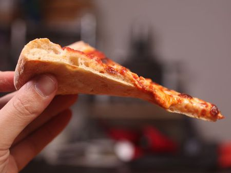

Pizza

Description
New York–style pizza is traditionally hand-tossed,[6] consisting in its basic form of a light layer of tomato sauce[4] sprinkled with dry, grated, full-fat mozzarella cheese; additional toppings are placed over the cheese.[6] Pies are typically around 18 to 24 inches (45 to 60 cm) in diameter, and commonly cut into eight slices. These large wide slices[7] are often eaten as fast food while folded in half along the crust both for convenience – allowing the slice to be eaten one-handed – and to control the flow of oil running off the pie in both directions.
Ingredients
- 22 1/2 ounces bread flour, plus more for dusting (638g; about 4 1/2 cups
- 0.5 ounce granulated sugar (15g; about 1 1/2 tablespoons)
- 0.35 ounce kosher salt (10g; about 1 tablespoon)
- 0.35 ounce instant yeast (10g; about 2 teaspoons)
- 15 ounces lukewarm water (415g; about 1 3/4 cups)
- 3 tablespoons (45ml) extra-virgin olive oil
- 1 batch New York Style Pizza Sauce
- 1 pound grated full-fat dry mozzarella cheese (454g; about 4 cups), placed in freezer for at least 15 minutes
Steps
- Combine flour, sugar, salt, and yeast in bowl of food processor. Pulse 3 to 4 times to incorporate. Add water and olive oil. Run food processor until mixture
forms ball that rides around the bowl above the blade, about 15 seconds. Continue processing 15 seconds longer.
- HTransfer dough ball to lightly floured surface and knead once or twice by hand until smooth ball is formed. It should pass the windowpane test. Divide dough
into three even portions and place each in a covered quart-sized deli container or in a zipper-lock freezer bag. Place in refrigerator and allow to rise at
least 1 day, and up to 5.
- At least two hours before baking, remove dough from refrigerator and shape into balls by gathering dough towards bottom and pinching shut. Flour well and place
each dough ball in a separate medium mixing bowl. Cover tightly with plastic wrap and allow to rise at warm room temperature until roughly doubled in volume.
- One hour before baking, adjust oven rack with pizza stone to middle position and preheat oven to 500°F (260°C). Turn single dough ball out onto lightly floured
surface. Gently press out dough into rough 8-inch circle, leaving outer inch higher than the rest. Gently stretch dough by draping over knuckles to form a
12- to 14-inch circle about 1/4-inch thick. Transfer to pizza peel.
- Spread approximately 2/3 cup sauce evenly over surface of crust, leaving 1/2- to 1-inch border along edge. Evenly spread 1/3 of cheese over sauce. Slide pizza
onto baking stone and bake until cheese is melted with some browned spots and crust is golden brown and puffed, 12 to 15 minutes. Transfer to cutting board,
slice, and serve immediately. Repeat with remaining two dough balls, remaining sauce, and remaining cheese.